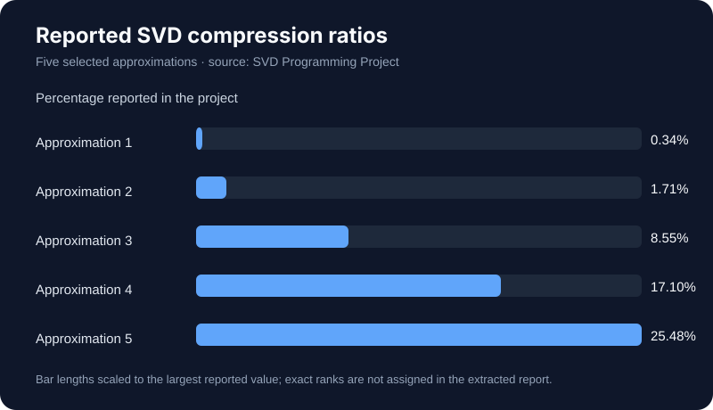

Numerical linear algebra · MATLAB
Image Compression with Singular Value Decomposition
A rank-reduction study relating singular values, compressed size, and image quality.
Method
The project loads an image, computes a singular value decomposition, and reconstructs approximations at selected ranks. It plots normalized singular values on a semilog scale and compares reconstructed images.
Reported results
The report states that the normalized singular value falls below 0.01 at rank 149. It reports five compression ratios—0.34%, 1.71%, 8.55%, 17.10%, and 25.48%—for selected reconstructions, with visual quality increasing as rank increases.

Interpretation and limits
The reported percentages describe the project's chosen rank approximations. The report does not specify enough detail in its extracted text to assign every percentage to a rank, so no rank-to-ratio mapping is claimed here.
Source
Based on my “SVD Programming Project” MATLAB report.